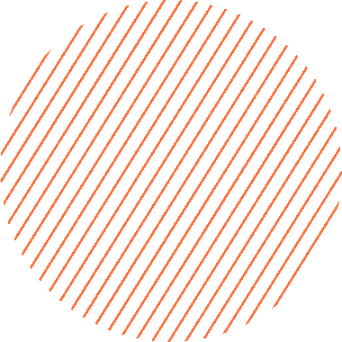
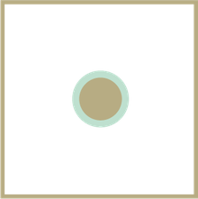
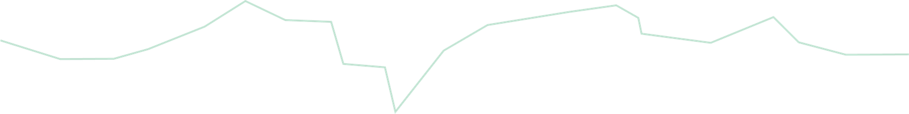
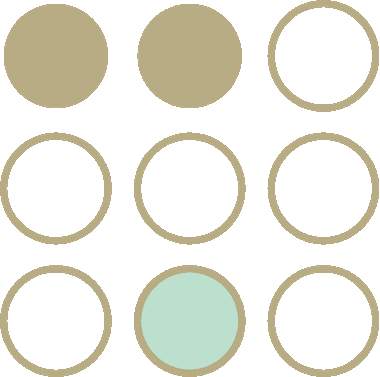

Debatimos el Proyecto de Ley de Presupuesto 2027.
Ver el programaElegí un día para ver la agenda. Después de cada encuentro sumamos acá la grabación, las presentaciones y los documentos.
Nuestros análisis del Proyecto de Presupuesto 2027: datos clave, prioridades de gasto y su impacto en los derechos.
Con esta herramienta de nuestro Monitor Presupuestario podés revisar el Proyecto de Presupuesto 2027 partida por partida y comparar sus montos con los de años anteriores. Las variaciones se muestran en términos reales, es decir, descontando la inflación.
Desde hace más de una década, la Asociación Civil por la Igualdad y la Justicia (ACIJ) lleva adelante la Semana de Presupuesto y Derechos, con el objetivo de abrir la discusión sobre el proyecto que el Poder Ejecutivo presenta cada año para ser debatido en el Congreso.
El presupuesto define cuántos recursos se destinan a garantizar derechos como la educación, la salud, la vivienda, el acceso a la justicia o la protección de la niñez. Durante la Semana compartimos análisis, datos y espacios de intercambio para que más personas y organizaciones puedan participar de esa discusión.